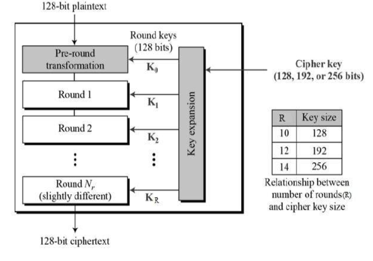

The more popular and widely adopted symmetric encryption algorithm likely to be encountered nowadays is the Advanced Encryption Standard (AES). It is found at least six time faster than triple DES.
A replacement for DES was needed as its key size was too small. With increasing computing power, it was considered vulnerable against exhaustive key search attack. Triple DES was designed to overcome this drawback but it was found slow.
The features of AES are as follows −
Symmetric key symmetric block cipher
128-bit data, 128/192/256-bit keys
Stronger and faster than Triple-DES
Provide full specification and design details
Software implementable in C and Java
Operation of AES
AES is an iterative rather than Feistel cipher. It is based on ‘substitution–permutation network’. It comprises of a series of linked operations, some of which involve replacing inputs by specific outputs (substitutions) and others involve shuffling bits around (permutations).
Interestingly, AES performs all its computations on bytes rather than bits. Hence, AES treats the 128 bits of a plaintext block as 16 bytes. These 16 bytes are arranged in four columns and four rows for processing as a matrix −
Unlike DES, the number of rounds in AES is variable and depends on the length of the key. AES uses 10 rounds for 128-bit keys, 12 rounds for 192-bit keys and 14 rounds for 256-bit keys. Each of these rounds uses a different 128-bit round key, which is calculated from the original AES key.
The schematic of AES structure is given in the following illustration −
